DOMAIN 7
SECURITY OPERATIONS
Domain 7 is where the rubber meets the road and focuses on integrating security within organizational operations. Oftentimes, this integration is in the form of processes that are put in place and configured to ensure that systems remain secure. Security operations are the day-to-day activities that the security function performs to support the entire organization in achieving its goals and objectives.
7.1 Understand and comply with investigations
7.1.1 Securing the Scene
CORE CONCEPTS |
|
|
One facet of security operations is investigations. Imagine you're a very experienced and capable investigator. To conduct a proper investigation, evidence needs to be secured in the appropriate manner. Security professionals may need to support the entire investigation process and do it correctly. The bottom line: investigators need to be able to conduct reliable investigations that will stand up to scrutiny and cross-examination.
As an experienced and capable investigator, imagine that your organization has been breached and you've managed to track the hacker back to their criminal lair-their parents' basement. As you descend the stairs, you discover the scene from where the crime was perpetrated, and you quickly make note of the computer that was used. Are you going to walk up to it and start moving the mouse around or typing on the keyboard to start gaining insights about what this person did? Of course not, because experience has taught you that doing so might contaminate the scene. In fact, the first thing you'll do is secure the scene to prevent contamination from taking place. That might involve blocking off the area where the crime took place, taking photographs, documenting the location of evidence in the scene, taking snapshots of the system, and so on. With forensic computer investigations, the exact same concept applies. Otherwise, once evidence has been contaminated, it can't be decontaminated. It's imperative to employ the right process and approach from the beginning.
7.1.2 Evidence Collection and Handling
CORE CONCEPTS |
|
|
|
|
|
Forensic Investigation Process
Understand the steps of the forensic investigation process and what happens at each step
The need to perform digital forensics exists within any organization that uses computer systems, networks, and the multitude of electronic devices currently available in the marketplace. Whether in response to a crime or incident, a breach of organizational policy, troubleshooting system or network issues, or a number of other reasons, digital forensic methodologies can assist in finding answers, solving problems, and, in some cases, successfully prosecuting crimes.
As the term methodologies implies, digital forensic processes can vary; but, certain digital forensic science practices and standards are typically consistent, regardless of context. First among them relates to identifying and securing the scene, which is focused on protecting potential evidence from being touched, removed, or otherwise contaminated until it can be properly examined. This step also marks the beginning of the chain of custody, which is critical where a crime may have been committed and for the sake of all evidence that may ultimately be admissible as part of a trial. After a scene is identified and secured properly, the formal collection of evidence can take place. Whether dealing with physical or digital evidence, proper care must be taken to protect the integrity of whatever is collected. Forensic policies, standards, and procedures can aid with the collection process to ensure the integrity of the evidence collected as well as establish the chain of custody.
Once collected, evidence and data can be examined and analyzed via automated and manual means to determine what might be of consequential interest for the sake of building a case, identifying a culprit, or otherwise moving further along with an investigation.
Finally, as noted further below, results of the analysis should be compiled in a report. The report should describe every facet of the investigative process, from beginning to end, as well as action items to be completed, recommendations for improvement, and anything else that may prove valuable. Additionally, because multiple audiences may exist, the report may need to be compiled in different formats or with varying levels of detail for the sake of a given audience.
Sources of Information and Evidence
Sources of information and evidence as part of a computer security investigation often include oral and written statements, documents, audio/visual records, and of course, computer systems. For purposes of Domain 7, the primary focus will be computer systems, networks, and network devices. Possible sources of information are noted in Table 7-1.
|
Oral/written statements |
Statements given to police, investigators, or as testimony in court by people who witness a crime or who may have information deemed pertinent to an investigation. |
|
Written documents |
Handwritten, typed, or printed documents such as checks, letters, wills, receipts, or contracts, to name a few, that may be relevant for the sake of an investigation. |
|
Computer systems |
In the context of an investigation, a computer system could include the unit that houses the CPU, motherboard, and other system-related components that might store data in a non-volatile manner, as well as the storage devices-SSD, HDD (external/internal), USB device, and so on-and any other peripheral that may have been connected to a computer while a crime was committed. |
|
Visual/audio |
As part of a computer security investigation, visual and audio evidence could include photographs, video and taped recordings, surveillance footage from security cameras, and so on. |
Table 7-1: Sources of Information and Evidence
In addition to sources of information, you also need to take numerous types of evidence into account. Those have been noted in Table 7-2.
|
Real evidence |
Real evidence is tangible physical objects (e.g., hard drives, SSDs, USB drives)-not the data on them. Real evidence can be physically held, touched, and inspected, and this type of evidence is often very important in a case. It is often used to prove or disprove a factual issue in a trial. |
|
Direct evidence |
Direct evidence speaks for itself and requires no inference (e.g., eyewitness accounts, confessions, a smoking gun). Direct evidence directly proves a fact being discussed. An example of direct evidence is video footage showing a defendant breaking into the computer storage area and walking out with two laptops. |
|
Circumstantial evidence |
Also referred to as indirect evidence, circumstantial evidence suggests a fact by implication or inference and can prove an intermediate fact. An example of circumstantial evidence is a witness testifying that the defendant was near the computer storage area after it had been broken into. |
|
Corroborative evidence |
Corroborative evidence supports facts or elements of the case, not a fact on its own, but supports other facts. Corroborating evidence can be very powerful, as it serves to uphold and confirm testimony of witnesses and other forms of evidence. |
|
Hearsay evidence |
Hearsay evidence is testimony from witnesses who were not present. No firsthand proof of accuracy or reliability exists, but the content is being offered to prove the truth of the matter at hand. Hearsay evidence is usually inadmissible in a court, unless an exception to hearsay rules is made. |
|
Best evidence rule |
The best evidence rule essentially states that original evidence rather than a copy or duplicate of the evidence should be entered as evidence. |
|
Secondary evidence |
Secondary evidence is a reproduction of, or substitute for, an original document or item of proof (e.g., print out of log files). In cases where original evidence no longer exists, a court may allow secondary evidence to be presented in a trial. |
Table 7-2: Evidence Types
Motive Opportunity Means (MOM)
Another concept often employed while conducting investigations is what's known as MOM. MOM stands for motive, opportunity, and means, and it serves as a guide when conducting an investigation. In other words, what might have motivated the suspect? Did the suspect have the opportunity to perpetrate the crime? Did the suspect have the means?
7.1.3 Locard's Exchange Principle
CORE CONCEPTS |
|
Understand what is meant by Locard's exchange principle
A simple yet effective method for identifying where to look for evidence is the notion that, whenever a crime is committed, something is taken and something is left behind. This explains why pictures are taken, carpets are vacuumed, fingerprints lifted, and crime scenes are otherwise meticulously examined. A nineteenth-century French criminologist, Dr. Edmund Locard, formulated the foundation of forensic science based upon this fact. In simple terms, this means that every time two objects interact, some type of transfer occurs-something is taken and something is left behind.
7.1.4 Digital/Computer Forensics
CORE CONCEPTS |
|
|
|
|
|
Understand the implications and challenges of working with live evidence
With computer security, the primary focus is computer, or digital, forensics. Digital forensics is the scientific examination and analysis of data from storage media in such a way that the information can be used as part of an investigation to identify the culprit or the root cause of an incident.
Live Evidence
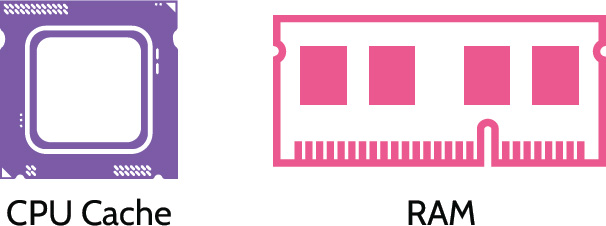
With digital forensics, one of the primary considerations is what's referred to as live evidence. Live evidence is data that is stored in a running system in places like random access memory (RAM), CPU, cache, buffers, and so on. If the keyboard is tapped, if the mouse is moved, and certainly if the plug is pulled or the system is powered off, the live evidence changes or disappears completely. Examining a live system changes the the state of the evidence. This fact makes it immediately clear that examination of a live system requires expert knowledge and specialized tools to extract live evidence and minimize contamination. As noted, live evidence is often stored in locations like RAM, cache, and the CPU, and if power to the system is disrupted, the live evidence is gone.
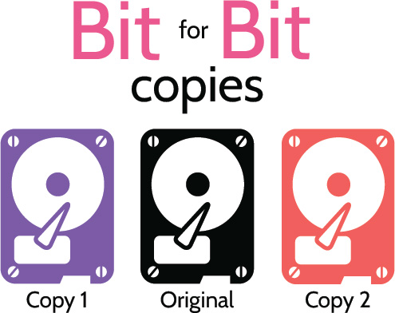
Forensic Copies
Another major source of digital evidence on a computer system is the hard drive. For example, imagine you're investigating a crime and have discovered a laptop that was likely used to commit the crime. The laptop is already turned off, so there are no concerns about contaminating live evidence. However, the hard drive might contain evidence, so you remove it to conduct forensic analysis. Whenever a forensic investigation of a hard drive is conducted, two identical bit-for-bit copies of the original hard drive should be created first. Then, the original hard drive should be placed in an evidence bag, the bag sealed, and the drive never touched again. Similarly, the first copy of the hard drive should be treated the same. The second copy of the drive is the working copy.
Understand the importance of creating bit-for-bit copies of a hard drive
What does "bit-for-bit copy" mean? It simply means it is an exact copy, down to every bit on the original drive, and specialized tools are required to create bit-for-bit copies. After the bit-for-bit copies are created, the original drive and the two copies should be hashed. If the hash values match, the copies are exact, bit-for-bit copies. That ensures integrity is maintained.
Why is it harder to do forensic analysis of mobile devices?
Understand why forensic analysis of computers and mobile devices can be difficult
 Manufacturers frequently change operating system structure, file structure, services, and connectors
Manufacturers frequently change operating system structure, file structure, services, and connectors
No single method or tool can extract all the data
Hibernation and suspension of applications
Extensive new training required for examiners
Reporting and Documentation
The final phase of the forensic investigation process is reporting and documentation, though documentation should be an integral component of every step in the process. At this point, all evidence has been examined, and the most relevant evidence should be documented for the sake of use by all relevant stakeholders, including:
Prosecution/Defense
Judge/Jury
Regulators
Investors
Insurers
Artifacts
Understand the importance and potential relevance of artifacts to an investigation
Forensic artifacts are remnants of a breach or attempted breach of a system or network, and they may or may not be relevant to an investigation or response. They're breadcrumbs that can potentially lead back to an intruder or at least identify their actions and the path they followed while in the system or network. Artifacts can be found in numerous places, including:
Computer systems
Web browsers
Mobile devices
Hard drives
Flash drives
Examples of artifacts include IP addresses, hashes, file name/type, registry keys (Windows), URLs, operating system information, as well as logged information, like account updates, profile changes, file changes, and so on, that point to malicious behavior. Undoubtedly with so many potential sources of artifacts available, identifying relevant artifacts can be akin to finding a needle in a haystack-a very large haystack-and the forensic investigator must be very skilled and careful in evaluating what is most pertinent and therefore most valuable for the sake of the investigation. Artifacts that support or refute a hypothesis related to an investigation or response can be used as evidence.
7.1.5 Chain of Custody
CORE CONCEPTS |
|
Chain of Custody
Understand the "chain of custody" and its importance
One very important aspect of evidence collection is that the chain of custody must be established immediately and maintained. The chain of custody is ultimately focused on having control of the evidence: who collected and handled what evidence, when, and where. Crime scenes should always be thoroughly documented via photos and diagrams. Additionally, evidence should be collected in a manner that protects it from tampering, contamination, or other things such as corruption or deterioration. It's imperative that evidence be controlled from the moment of collection to the moment it might be presented in court, which could potentially be years later. Regardless of the time frame, if the chain of custody is maintained, evidence will have a better opportunity to be admissible.
A useful way to think about establishing the chain of custody is to tag, bag, and carry the evidence as depicted in Figure 7-1. Tag the evidence to clearly note where the evidence was collected, on what date, and by whom. Bag the evidence-carefully store the evidence to minimize contamination. Carry the evidence back to a secured evidence storage location, such as an evidence locker.
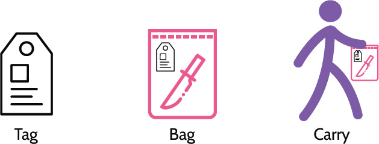
Figure 7-1: Chain of Custody
7.1.6 Five Rules of Evidence
CORE CONCEPTS |
|
|
For any evidence to stand the best chance of surviving legal and other scrutiny, it should exhibit five characteristics, also known as the "five rules of evidence," described in Table 7-3.
Understand the five rules of evidence and their meaning
|
Authentic |
Evidence is not fabricated or planted and can be proven so through crime scene photos or things like bit-for-bit copies of hard drives. This points back to securing the scene, to ensure the best chance of preserving all critical pieces of evidence for the sake of an investigation and any legal proceedings. |
|
Accurate |
Evidence has not been changed or modified-it has integrity. |
|
Complete |
Evidence must be complete, and all parts presented. In other words, all pieces of evidence must be available and shared, whether they support or fail to support the case. |
|
Convincing or Reliable |
Evidence must be conveyed in a manner that allows anybody to understand what is being presented. Evidence must display a high degree of veracity-it must demonstrate a high degree of truth. Additionally, nontechnical people, including judges and juries, must be able to understand what is being presented. |
|
Admissible |
Evidence is accepted as part of a case and allowed into the court proceedings. Chain of custody can help, but it does not guarantee admissibility. |
Table 7-3: Five Rules of Evidence
Investigative Techniques
Several investigative techniques can be used when conducting analysis.
One of them is media analysis. Media might include the analysis of things like hard drives, flash drives, tapes, CDs, USB drives, or anything similar. With media analysis, oftentimes the search is for what's not there as much as what is there. For example, when examining a hard drive, if someone has deleted a file, is that file gone from the hard drive? Oftentimes the pointer to the file has simply been deleted, but the file is still there. Media analysis examines the bits on a hard drive that may no longer have pointers, but the data is still there.
Software analysis focuses on an application, especially malware. With malware, the goal is to determine exactly how it works and what it is trying to do. An important facet of this relates to attribution and trying to determine who or where the software was created. Oftentimes, the source code can offer clues and pointers that help to pinpoint this information.
Network analysis attempts to understand how a network might have been penetrated, how the network was traversed, and what systems may have been breached. Typically, system log files provide the best source of information for network analysis.
7.1.7 Types of Investigations
Table 7-4 provides a summary of types of investigations, relating to an incident.
|
Overview |
Who drives the investigation? |
|
Criminal |
Deal with crimes and oftentimes with accompanying legal punishment. Convictions often lead to time in jail as well as a criminal record. These are conducted by law enforcement at the local, state, and federal levels, depending upon the nature and severity of the crime, and punishment can potentially be very harsh. |
Primarily law enforcement with support from the organization |
|
Civil |
Deal with disputes between individuals or organizations, and whichever party is found guilty usually pays a fine or other monetary penalty as well as related court costs. |
Organizations, individuals and their attorneys |
|
Regulatory |
Deals with violations of regulated activities |
Associated regulatory body |
|
Administrative |
Focus on internal violations of organizational policies and incidents identified by an organization. Perhaps employee misconduct was involved, or policies or procedures were broken, or a hacker absconded with some credit card numbers. Unless it's determined that criminal activity resulted, administrative investigations are opened and closed by the organization itself. |
The organization |
Table 7-4: Types of Investigations
In the case of criminal and civil investigations in the context of an organization, the investigation might start internally. Once it becomes clear that criminal activity has taken place, law enforcement should be contacted, at which point the investigation would be handed over to them, and they would drive the investigation forward from there.
7.2 Conduct logging and monitoring activities
7.2.1 Security Information and Event Management (SIEM)
CORE CONCEPTS |
|
Understand at a high level what a SIEM system is and its capabilities
The topic of logging and monitoring was first introduced in Domain 6, and now we're going to look at it more closely in the context of security information and event management (SIEM) systems. SIEM systems ingest logs from disparate devices throughout an organization, they aggregate and correlate the log entries and look for interesting activity. Relevant findings are reported, so additional action can be taken. At a high level, Figure 7-2 shows how a SIEM system operates.
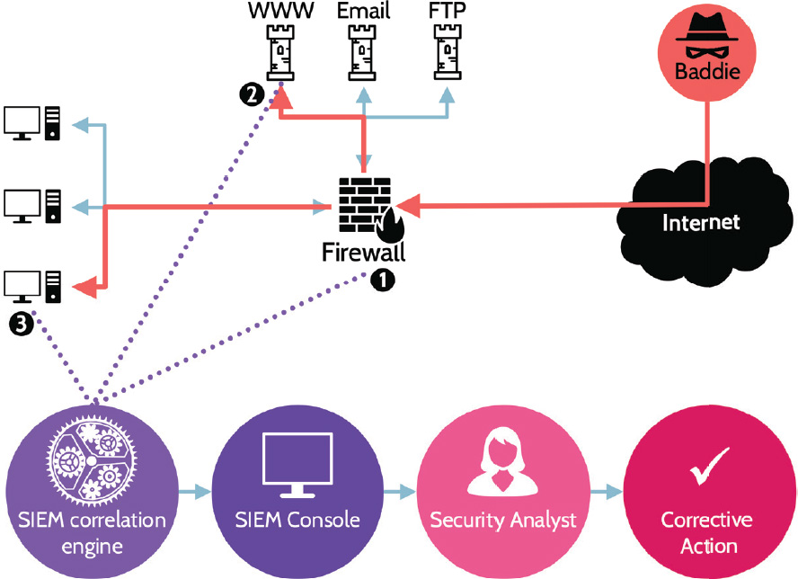
Figure 7-2: SIEM Operation
Let's examine a simple example of how this might work.
Imagine an attacker who starts poking at your network to determine what's where and what can be accessed. As this activity takes place, log events are being generated. A log event is simply a record of any event of interest. Most events that a SIEM ingests are meaningless, even some of the events being generated by the hacker, because the hacker is simply poking around. Now, let's further imagine that the hacker finds an entry point and successfully gains access to a web server, and from the web server they're able to locate a back channel that leads to internal systems. These additional activities, like before, continue to generate events, but now-when correlated to earlier events-they take on new meaning and, very likely, generate some type of alert that a security analyst would be tasked with examining further. Very quickly, the analyst is going to try and determine if this is a false-positive or if something malicious is really taking place, and this highlights an important point about SIEM systems in general and their installation and operation.
SIEM systems are much more than just technology. Yes, the technology is important and complicated and very hard to implement, but it's more than these facts. SIEM systems also require trained personnel. Let's look briefly at a real-life example to explain.
Company A (generic name used to protect the innocent) suffered two major breaches. After the first breach, they installed several expensive and sophisticated systems, which helped detect the second breach. In fact, two different teams-one in the United States and one in India-detected the breach. But there was a breakdown, and despite the technology that alerted about the breach, the alert was not properly escalated and was ultimately ignored. So, the technology was in place, it detected the hackers, and it even alerted the security team; then everything fell apart with the process of escalation and dealing with the situation. Again, this example highlights the fact that SIEM systems are complex and require expertise to install and tune properly, and they require a properly trained team that understands how to read and interpret what they're seeing as well as what escalation procedures to follow when a legitimate alert is raised. SIEM systems represent technology, process, and people, and each is relevant to overall effectiveness.
Figure 7-3 depicts another example.
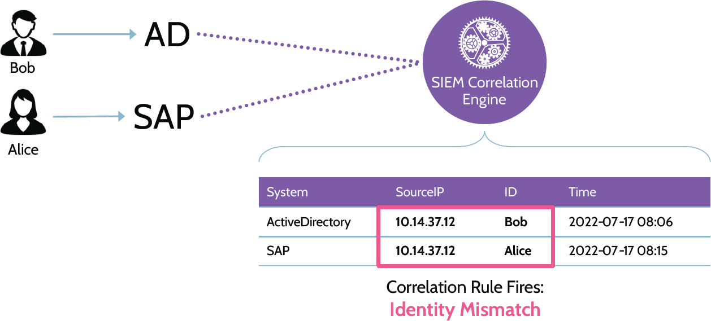
Figure 7-3: SIEM Example
Imagine two users, Bob and Alice, both working from home. Bob's an active user with a valid account, and he logs into Active Directory (AD). When Bob logs into Active Directory, an event is logged and captured by the SIEM system. Several minutes later, Alice logs into SAP. Alice is also a legitimate user with a valid account, and the event is similarly logged to the SIEM system. However, this time the SIEM system generates an alert because the IP address associated with Alice is the same as the IP address associated with Bob, which wouldn't make sense because they both live at different homes. This is not normal and may indicate a problem that needs to be further evaluated by an analyst. For example, an attacker may have compromised legitimate user accounts and is using those to access company systems. At the very least, this looks suspicious. Without the log events being correlated in the context of the SIEM system, this anomaly wouldn't have been identified because events logged in Active Directory and events logged in the SAP system are separate. However, once ingested and aggregated by the SIEM system, correlation took place, and the once disparate events now tell a different story. This functionality is one of the major advantages of SIEM systems.
Both examples point to the real power of SIEM systems. With traditional logging, where log files are only captured and maintained on individual systems, it would take enormous effort to access and analyze all the captured data and determine if anything out of the ordinary or malicious is taking place. It's like trying to find the proverbial needle in the haystack. With a SIEM system, significant intelligence is incorporated into their functionality, which allows significant amounts of logged events and analysis and correlation of the same to take place very quickly. And with the proper tuning, SIEM systems can identify and alert on even the least apparent telltale sign.
Figure 7-4: SIEM Capabilities
Let's look a bit deeper at SIEM system capabilities as also highlighted in Figure 7-4.
SIEM systems allow for the aggregation of logged events from multiple systems. In other words, events logged in systems located throughout an organization's network can all be brought under one umbrella-the SIEM system.
Once aggregated, logs typically need to be normalized, because different systems log events using different formats. For example, one system might log events using a twelve-hour clock, while another system might use a twenty-four-hour clock, or the dates might be in month/day/year format on one system and day/month/format on another. Events should be deduplicated, or simply deduped. This means that duplicate events are eliminated. Normalization helps clean up data, put it in the same format, and eliminate redundancy, so it can be easily analyzed and suspicious activity flagged, based upon rules that have been programmed into the system.
After data has been normalized, correlation seeks to line up events and determine which of them alone and in combination might be important and indicative of problems.
Secure storage is the concept where the SIEM system keeps a copy of all logged events from each device. The system is designed to store data for long periods of time, and ideally those log files are read-only, to prevent tampering or deletion.
Analysis and reporting refer to the SIEM system rules that have been put in place, looking at data related to the same, and taking action when appropriate. As noted earlier, event log data can be collected from virtually every system within an organization. However, SIEM systems should be used to capture relevant logs, based on organizational risk, required budget, and regulatory obligations.
Example Sources of Event Data
As noted above, SIEM systems allow log data from multiple sources, such as those noted below, to be captured in one location.
Security appliances
Network devices
DLP
Data activity
Applications
Operating systems
Servers
IPS/IDS
Threat Intelligence
The term "threat intelligence" is an umbrella term encompassing threat research and analysis and emerging threat trends. It is an important element of any organization's digital security strategy that equips security professionals to proactively anticipate, recognize, and respond to threats. Many SIEM solutions offer threat intelligence subscriptions that add additional capabilities, strength, and value to already robust systems. However, actionable threat intelligence can also be gleaned from documents like vendor trend reports, public sector team reports (like US-CERT), related information sharing and analysis centers (ISACs), and more.
User and Entity Behavior Analytics (UEBA)
UEBA (also known as UBA) analysis engines are typically included with SIEM solutions or may be added via subscription. As the name implies, UEBA focuses on the analysis of user and entity behavior. At its core, UEBA monitors the behavior and patterns of users and entities, logs and correlates the underlying data, analyzes the data, and triggers alerts when necessary. The analytics component of a UEBA solution is based on machine learning, which allows a baseline for each user and entity to be created. If future behavior deviates from what is considered normal, an alert can be fired, and potential further action can be taken based upon the perceived or real threat. UEBA solutions can be used to address insider threats, hacked privileged accounts, or brute-force attacks, to name a few examples, and the sophisticated manner through which UEBA can detect behavioral shifts and anomalies and alert a security team before a breach occurs or progresses too far can potentially prove invaluable to an organization.
7.2.2 Continuous Monitoring
CORE CONCEPTS |
|
|
Understand the concept of continuous monitoring and the value it provides to an organization
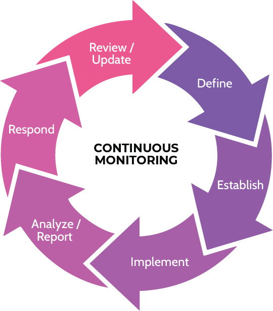
Figure 7-5: Continuous Monitoring Steps
Setting up a SIEM system can be a very long and arduous process, sometimes taking months or even longer, depending on the complexity of the environment and needs of the organization. However, once the system has been configured and is running, the work is not complete. In fact, the SIEM system must be updated and monitored continuously, because
The threat environment is constantly changing,
New vulnerabilities are constantly emerging,
Assets in the organization are changing,
New monitoring rules need to be configured and programmed,
The balance between false-positives and false-negatives must be closely monitored and responded to accordingly.
Understand what continuous monitoring encompasses
Finally, and perhaps most importantly, focus should be not only on the technology and related processes, but also on the people utilizing the technology and the escalation processes, so that timely and proper responses can take place before a breach can cause significant damage to the organization. The full continuous monitoring life cycle has been provided in Figure 7-5.
In addition to the topics and subject matter covered here in 7.2, the Official CISSP Certification Exam Outline includes other topics in this section that are covered elsewhere in the book.
Please refer to Domain 4 for details on intrusion detection and prevention, and egress (and ingress) monitoring.
Please refer to Domain 6 for details on log management.
7.2.3 Security Orchestration, Automation, and Response (SOAR)
SOAR is a collection of compatible technologies that take input and data from disparate sources-such as other devices, email, Security Information Event Management (SIEM) systems, user submissions, and manual input-and apply rules and workflows aligned to organizational processes and procedures.
SOAR focuses on three key areas:
Threat and vulnerability management
Incident response
Security operations automation
SOAR tools can be integrated with other technologies and automated to orchestrate a desired outcome and better visibility. SOAR tools typically include incident and threat intelligence management features, reporting, and data analytics. Additionally, through machine-learning and machine-powered assistance, SOC activities and threat detection and response by analysts can be efficiently and consistently improved.
7.3 Perform configuration management (CM) (e.g., provisioning, baselining, automation)
7.3.1 Asset Inventory
CORE CONCEPTS |
|
|
|
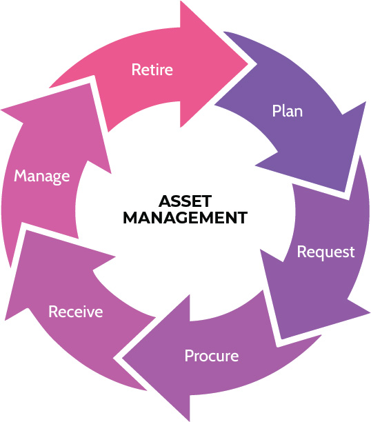
Figure 7-6: Asset Management
The full asset management life cycle can be seen in Figure 7-6.
Items can be requested to be procured after careful planning takes place about what's needed in the environment. However, they also need to be securely provisioned. That refers to how things like hardware, software, devices, and so on are provisioned or deployed. Secure provisioning is about the deployment process. For example, when a firewall is purchased, it's typically configured with default settings by the vendor. These default settings usually include default admin and user accounts and passwords as well as other configuration settings. It's not a best practice to deploy any device with default settings. In fact, a process already discussed-system hardening-should be used to ensure that the new system is properly secured and deployed according to policy and baselines established by the organization.
Additionally, whenever deploying a new asset-whether hardware or software-an associated asset inventory database should be updated. Assets represent an organization's attack surface. In other words, each asset is something of value that an attacker might target. Without a current asset inventory, including details about the asset owner, the assets have a very low chance of being patched, configured, scanned routinely, or otherwise kept up to date. It's easy to see that secure provisioning ties into the concept of asset management and the asset life cycle very closely.
7.3.2 Configuration Management
CORE CONCEPTS |
|
|
|
|
|
Understand the value and key benefits of configuration management
A significant aspect of secure provisioning is configuration management. As the term implies, configuration management focuses on the proper configuration when a device is first deployed, and this is where tools like baselines, policies, and standards are utilized. Hardening-ensuring that only the necessary services and features of a given hardware device or piece of software are available-should be part of the configuration management process. Additionally-especially in large organizations-automated tools can be used for provisioning purposes. The use of automation can help ensure consistency with the provisioning process as well as save time.
Device configurations should be documented and reviewed on a periodic basis, and things like credentialed vulnerability scans can be used as a way to review hardware and software configurations. In fact, entire software suites exist for purposes of examining configurations of almost any type of system in an organization.
Identify assets to keep under control
Configure assets
Document configuration
Verify configuration
7.4 Apply foundational security operations concepts
7.4.1 Foundational Security Operations Concepts
CORE CONCEPTS |
|
|
Understand foundational security operations concepts
Privileged account management: Privileged accounts refers to system accounts that typically have significant power. System administrator accounts are one example of a privileged account, and they often give what's known as "root" or "admin" access to a system. In other words, the account can access and control every part of the system. In the wrong hands this type of control can obviously lead to significant problems. Therefore, privileged accounts should be very carefully managed. For one, access to them should be restricted as much as possible. For another, within an IT department, for example, personnel should have regular user accounts as well as accounts with increased privileges that are only used when needed. Additionally, privileged accounts should require additional authentication, like multifactor authentication. This should be the rule, not the exception. Finally, the use of privileged accounts should always be accompanied by increased logging and monitoring.
Need to know and least privilege were discussed in 5.1.1, and Table 7-5 provides a summary of these terms.
|
Need to Know |
Least Privilege |
|
Restricting a user's KNOWLEDGE (access to data) to only the data required for them to perform their role |
Restricting a user's ACTIONS/PRIVILEGES to only those required for them to perform their role |
Table 7-5: Need to Know and Least Privilege
Job rotation: Another excellent fraud detection and deterrent technique is what's known as job rotation. When an organization employs job rotation, they're essentially telling employees that from time to time, another employee will assume their duties and they'll assume the duties of somebody else. Not only does this help prevent fraud and the perpetration of crimes, but it can also help ensure accurate processes as well as cross-training of employees to avoid a single point of failure.
Service Level Agreements (SLAs): SLAs are legal contracts and are part of the overall contract between a customer and vendor. They contain terms denoting related time frames against performance of specific operations that have been agreed upon. For example, an SLA could require a vendor to respond to a certain type of incident within one hour.
7.5 Apply resource protection techniques
7.5.1 Protecting Media
CORE CONCEPTS |
|
|
|
Within any organization, data is one of the most important assets, and it follows that protection of data is critical for the ongoing success of the organization. This fact, therefore, presents some unique needs as well as some challenges. For one thing, data may be stored on a variety of media. For another, data may need to be kept for very long periods of time.
Media
Depending upon how data is being used, storage requirements, portability, and other factors, data storage media might include any of the following:
Paper
Microforms (microfilm and microfiche)
Magnetic (HD, disks, and tapes)
Flash memory (SSD and memory cards)
Optical (CD and DVD)
The Mean Time Between Failure (MTBF) of media can help determine the best media to use for a given need, but no media is going to reliably last for significantly long periods of time. To best retain and protect data for very long periods of time, processes must be put in place that constantly move the data to new media, and file formats should be updated in order to maintain compatibility with applications that can manage the data. Additionally, and most importantly, the protection of the data must be updated to reflect current cryptography standards versus standards that may have been employed when the data was first created.
Media Management
When employing a media management process, some key considerations should include the items listed below, and they should try to look into the future as far as possible.
Confidentiality
Access speeds
Portability
Durability
Media format
Data format
For example, looking at confidentiality, perhaps a certain cryptographic algorithm would more than suffice to protect the data today, but will it suffice in ten years? If data needs to be protected that long, or longer, perhaps the strongest algorithm available should be used instead.
Media Protection Techniques
Associated with media management is protection of the media itself, which typically involves policies and procedures, access control mechanisms, labeling and marking, storage, transport, sanitization, use, and end of life. Which elements are involved and to what degree they are used points back to the value of the data stored on the media, relative to the goals and objectives and associated risk management process of the organization.
Hardware and Software Asset Management
Closely aligned with the information above is the management of hardware and software assets. To best manage either asset class, an inventory of all assets must exist, and it must be maintained. An owner should be assigned to each asset, with each owner accountable for protecting that asset, including things such as patching (software and firmware), maintaining proper licensing, and determining the most appropriate and secure configuration before deployment and on an ongoing basis. To summarize, the items noted below must be present.
Asset management life cycle
Inventories
Patching
Software licensing
Secure configuration
7.6 Conduct incident management
7.6.1 Incident Response Process
CORE CONCEPTS |
|
|
|
|
|
Incident response is the process used to detect and respond to incidents and to reduce the impact when incidents occur. Incident response attempts to keep a business operating or to restore operations as quickly as possible in the wake of an incident. Furthermore, for the sake of ongoing operations, incident response seeks to learn from mistakes and strengthen the organization as a result.
Goals of Incident Response
Provide an effective and efficient response to reduce impact to the organization
Maintain or restore business continuity
Defend against future attacks
Understand the difference between an event and an incident
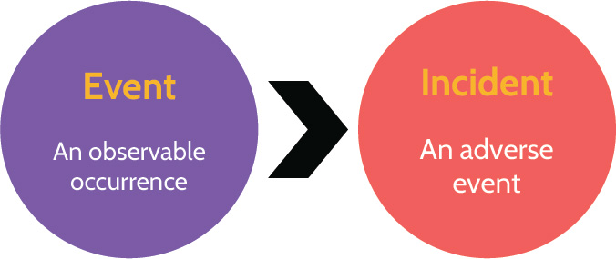
Events and Incidents
To know when an incident response process should be initiated, an important distinction needs to be made. Namely, what distinguishes an incident from an event. Events take place on a continual basis, and the vast majority of these are insignificant; however, events that lead to some type of adversity can be deemed incidents, which should then trigger an organization's incident response process.
Detection Examples
Organizations must have tools in place that can help detect and identify incidents. Most organizations use one or more of the tools noted below for detection purposes, and some of them-like IPS/IDS, DLP, and SIEM-require quite a bit of configuration and tuning to work optimally. Thus, a combination of automated and manual tools is usually the best and most effective approach.
IPS/IDS
DLP
Anti-malware
SIEM
Administrative review
Motion sensors
Cameras
Guards
Examples of Incidents
Incidents can take on many shapes and forms, and the examples below show a good mix of what might be called an incident. It's not important to memorize this list, as it's certainly not exhaustive; it simply serves to illustrate what types of incidents might be detected that require a formal response via the incident response process.
Malware
Hacker attack
Insider attack
Employee error
System error
Data corruption
Workplace injury
Understand the incident response process and what happens at each step
Process Steps
The incident response process is outlined in Figure 7-7 and then further defined in Table 7-6.
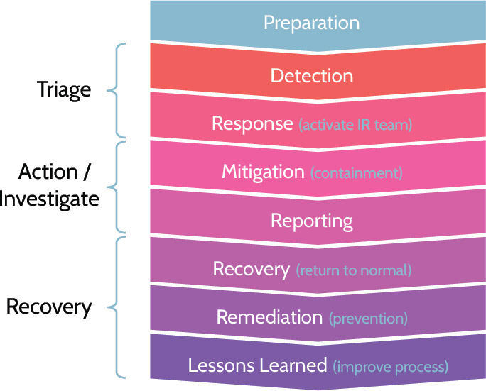
Figure 7-7: Incident Response Process
|
Preparation |
Preparation is critical, as this will help anticipate all the steps to follow. Preparation would include things like developing the IR process, assigning IR team members, and everything related to what happens when an incident is identified. |
|
Detection |
Pointing back to the distinction between an event and an incident, the goal of detection is to identify an adverse event-an incident-and to begin dealing with it. |
|
Response (IR Team) |
After an incident has been identified, the IR Team should be activated. Among the first steps taken by the IR Team will be an impact assessment to determine how big of a deal is the incident, how long might the impact be experienced, who else might need to be involved, and so on. |
|
Mitigation (containment) |
In addition to conducting an impact assessment, the IR Team will attempt to minimize-to contain-damage or impact from the incident. The IR Team's job at this point is not to fix the problem; it's simply to try and prevent further damage from taking place. For example, if a fire has broken out, the IR Team will focus on ensuring human safety, extinguishing the fire, and confirming that no hot spots exist that could flare up again. |
|
Reporting |
Reporting occurs throughout the incident response process. Once an incident is mitigated, formal reporting takes place, because there are often numerous stakeholders that need to understand what has happened. Especially in situations where a major incident has taken place, these stakeholders could include senior management, Board members, HR, Legal, IT, customers, vendors, PR, and even outside media outlets. As there are often numerous stakeholders seeking updates, this can quickly distract the IR Team from focusing on their role and responding to the incident, so it's important that one person be designated as the point person for purposes of reporting. Taking this approach helps keep the message consistent, and it allows those most directly involved with responding to the incident to stay focused on their jobs. |
|
Recovery (return to normal) |
At this point, the goal is to start returning things to normal, to getting back to business as usual. For example, looking back at the fire example, this is when cleanup of water and debris would take place, walls and ceilings replaced, systems put back in place, and so on. |
|
Remediation (prevention) |
In parallel with recovery, remediation is also taking place. The goal of remediation is to implement fixes and improvements to systems and processes to prevent a similar incident from occurring again. |
|
Lessons Learned (improve process) |
Lessons learned steps back and takes a more all-encompassing view of the situation related to an incident and asks questions like:
The findings from the lessons learned are used to further improve systems and processes to try to prevent future incidents from occurring. |
Table 7-6: Definitions of Incident Response Steps
7.7 Operate and maintain detective and preventive measures
7.7.1 Malware
CORE CONCEPTS |
|
|
|
|
|
|
|
|
|
|
Understand different types of malware and characteristics of each
Malware is malicious software that negatively impacts a system, and a number of different types of malware exist. It's very common that malware demonstrates multiple different personality traits. For example, a piece of malware can be considered a worm and it can be polymorphic. Table 7-7 describes different types of malware and their traits in more detail.
Types of Malware
|
Virus |
The defining characteristic of a virus is it's a piece of malware that has to be triggered in some way by the user. |
|
Worm |
A worm is a piece of malware that is able to self-propagate and spread through a network or a series of systems on its own, by exploiting a vulnerability in those systems. Essentially, a worm can be much more dangerous than a virus. |
|
Companion |
Companion malware is a type of malware that attaches itself to legitimate programs and runs simultaneously with them. It creates a different infected file with a similar name, leading the user to execute the infected file unintentionally. For example, creating files with similar names, but different extensions, may cause the execution of the infected file before the intended application. . |
|
Macro |
A macro is something often found in Microsoft Office products, like Excel, and is created using a very simple programming language to automate tasks. Because a programming language is involved, macros can be programmed to be malicious and harmful, and running macros automatically when opening an Excel or similar file-especially if the file originated elsewhere-is discouraged. |
|
Multipartite |
Multipartite means the malware spreads in different ways. Stuxnet is a perfect example of multipartite malware. Stuxnet was first introduced to and infected a system via the system's USB port. Once the system was compromised, it spread harmlessly to other systems until reaching the target systems-Iran's nuclear centrifuges-at which point it sped the centrifuges to the point of failure while indicating to plant workers that everything was working normally. |
|
Polymorphic |
This term is best understood by looking at its parts: poly and morphic. Poly means "many"; morphic means "having a form or shape." Put together, the word polymorphic means "many forms or shapes." Specifically, every time it replicates across a network, polymorphic malware can change aspects of itself, like file name, file size, code structure, and so on, in order to evade detection. |
|
Trojan |
A Trojan horse is malware that looks harmless, or even desirable, but contains malicious code. Trojans are often found in software that is easily and freely downloadable from the internet-audio and video codec files often harbor this type of malware. |
|
Botnet |
A botnet is many infected systems that have been harnessed together and act in unison. They're typically managed via some type of command and control structure created by the attacker. Botnets can be used for cryptocurrency mining, DDoS attacks, sending spam, and so on. |
|
Boot sector infector |
Boot sector infectors are pieces of malware that are able to install themselves in the boot sector of a hard drive. That allows it to run upon system boot up. Boot sector infectors are extraordinarily difficult to detect, and once installed, they're very difficult to remove. Most operating systems can't read the boot sector by default, so boot sector malware often stays very well hidden, almost as if invisible. |
|
Hoaxes/Pranks |
Hoaxes and pranks are not actually software. Rather, they're typically social engineering-via email or other means-that intends harm (hoaxes) or just a good laugh (pranks). For example, a hoax could be something like telling a person they can speed up their system by going to a command prompt and typing DEL *.* In fact, following those instructions could potentially lead to the deletion of everything on a system. A prank could be something like editing the display settings of a system and flipping the screen upside down. |
|
Logic bomb |
A logic bomb is a bit of code that, based on some logic, will execute. A classic example of this is a situation that involved a system administrator at a small/medium-size organization. He was the only IT person and had worked for the organization for years. Over time, he grew disgruntled and wrote a little logic bomb and planted it in a system. The logic bomb did one simple thing: it queried the HR database every morning and asked one simple question, "Am I still an employee?" One day, when the IT person was no longer an employee, the logic bomb continued to execute and deleted every bit of data from the systems. Think scorched earth-backups, files, email-everything was wiped out. As a result, the organization was seriously impacted. The former IT guy went to jail. |
|
Stealth |
Stealth malware is malware that uses various active techniques to avoid detection. Stealth malware will attempt to actively disable the security capabilities of the system (e.g., disable the antivirus software). Once a computer is infected with stealth malware, detection and removal can be a complex process. |
|
Ransomware |
Ransomware is gaining in popularity very rapidly. It is a type of malware that typically encrypts a system or a network of systems, effectively locking users out, and then demands a ransom payment (usually in the form of a digital currency, like Bitcoin) to gain access to the decryption key. Many ransomware attacks begin with the attacker gaining access to the target network and exfiltrating a significant amount of data from the organization. Once this is done, system and network encryption takes place. By threatening to release the exfiltrated data to the public and causing the organization reputational and other harm, the attacker increases the likelihood of receiving the ransom payment. |
|
Rootkit |
Similar to stealth malware, rootkit malware attempts to mask its presence on a system. As the name implies, a rootkit typically includes a collection of malware tools that an attacker can utilize according to specific goals. For example, one tool in a rootkit might be used to steal passwords, while another tool might be used to plant a backdoor or mask its presence by deleting critical system files and replacing them with fake ones. |
|
Data diddler |
A data diddler is a piece of malware that makes very small changes over a long period of time to evade detection. One example of this is known as a salami attack. How do you slice salami? Very thinly. A salami attack is specific to financial systems, with regards to calculating interest and taxes. Oftentimes these numbers are never calculated perfectly, thus allowing a salami attack to shave off fractions of amounts and put them in another account. Over time and with enough transactions, the shaved amounts can add up to quite a significant sum of money. |
|
Zero day |
A zero day is any type of malware that's never been seen in the wild before. The vendor of the impacted product is unaware, as are security companies that create antimalware software intended to protect systems. Certainly, customers are completely unaware of a zero day. The only person aware of a zero day is the creator of the malware; they're using it for the first time. Because this is day zero of the malware being "in the wild," no detection signatures yet exist, and this fact makes zero day malware potentially very dangerous. |
Table 7-7: Malware Types
Third-Party Provided Security Services
As cloud technology and services have become more common, so too have phrases like "third-party provided security services." Third-party provided security services simply refer to the menu of security-related services that can be contracted. So, in addition to the many security-related practices and controls discussed in this section, SIEM, auditing, penetration testing, antivirus and malware, and forensic services can be provided by third-party providers.
7.7.2 Anti-malware
CORE CONCEPTS |
|
|
|
|
What is one of the most effective ways to prevent malware outbreaks?
Anti-malware, as the name suggests, is training or software designed to prevent malware from being triggered. One of the best anti-malware solutions is effective policy and providing user training and awareness to staff members. Considering that a virus requires human interaction-typically the click of a mouse on a link or opening of an attachment-to trigger it, it follows that providing a basic understanding of security and steps to follow can help prevent virus outbreaks.
Understand the difference between signature-based and heuristic malware detection software
More technical methods of detecting malware include using signature-based antimalware systems. These systems contain what are known as definition files-files that include signature characteristics of currently known malware-and scan systems using this information to detect suspicious and compromised files. These systems are unable to detect zero-day malware, and they're only accurate based upon accurate definition files, so they constantly need to be updated.
Heuristic systems, on the other hand, do not look for malware based on a particular pattern or signature. Rather, they look at the underlying code or behavior of a file. For instance, if a heuristic system identified an executable file as suspicious, it might run the file in what's known as a sandbox, to see how the file behaves. Heuristic systems generally work one of two ways:
1. Static code scanning techniques: the scanner scans code in files, similar to white box testing
2. Dynamic techniques: the scanner runs executable files in a sandbox to observe their behavior.
Either way, by examining code or running in a sandbox, heuristic systems are attempting to determine what the code does or how the file behaves. If it detects something suspicious, it will block the file. Most malware is designed to know when it's being analyzed, especially in the context of a sandbox, and will behave normally (malicious operation will remain dormant). Then, once on a real system, it behaves maliciously. Also, heuristic systems tend to generate high numbers of false-positives; in other words, perfectly legitimate files and application programs are flagged as suspicious, which slows down productivity of staff members. The major advantage of heuristic scanners is they can potentially detect zero day malware.
Activity monitors monitor running systems to see what processes are active. If something suspicious is detected, an alert will be raised. Malware often installs itself on a system and runs in the background. Activity monitors are designed to detect the malware and send an alert.
Change detection (also known as file integrity monitoring), commonly found in Linux-based systems, focuses on modification of key system files. Change detection systems first create hashes of key operating system files and store the hashes in a secure location. Then, as frequently as necessary-every hour, every day, whatever interval makes sense-the tool will rehash the files and compare the new hashes against the stored hashes. If they match, everything is good; if they don't, something might be wrong and an alert is generated. Similar to other types of systems, especially signature-based antimalware systems, change detection systems require continual updating in order to be most effective.
Machine Learning and Artificial Intelligence (AI)-Based Tools
To understand what is meant by machine learning (ML) and artificial intelligence (AI)-based tools, it is important to have an understanding of each term. Of the two, artificial intelligence has been in use longer, and over the years its meaning has changed to reflect advances in technology and the goals trying to be achieved. In today's context, AI development has focused more on the use of human intelligence as a model and not as a goal unto itself.
With this understanding, machine learning (ML), which is often viewed as a subset of artificial intelligence, can be used for purposes of business growth, improving customer selection and satisfaction, and optimizing processes, logistics, speed of delivery, and quality, among others. In its simplest form, ML employs the strength of artificial intelligence, where a computer is used to learn from data inputs (the past) and make predictions (the future). In reality, ML systems are often networked computers that utilize very powerful processors to run complex algorithms in order to derive meaningful and actionable insights for the sake of future endeavors based upon data inputs generated by past events.
Together, ML and AI-based tools can:
Empower systems to use data to learn and improve without being explicitly programmed
Make predictions through the use of mathematical models to analyze patterns
ML/AI Security Application
Based upon the above information, in the context of security, ML/AI is specifically being leveraged to provide:
Threat detection and classification
Network risk scoring
Automation of routine security tasks and optimization of human analysis
Response to cybercrime:
Unauthorized access
Evasive malware
Spear phishing
In addition to the topics and subject matter covered here in section 7.7, the Official CISSP Certification Exam Outline includes other topics in this section that are covered elsewhere in the book. Please refer to Domain 4 for details on the following topics:
Firewalls (e.g., next generation, web application, network)
Intrusion Detection Systems (IDS) and Intrusion Prevention Systems (IPS)
Whitelisting/blacklisting
Sandboxing
Honeypots/honeynets
7.8 Implement and support patch and vulnerability management
7.8.1 Patch Management
CORE CONCEPTS |
|
|
|
|
|
Patch management is a proactive process to create a consistently configured environment that is secure against known vulnerabilities. Patches fix security flaws and vulnerabilities in systems. Patches can also improve performance and add functionality.
Understand why timely and consistent application of patches is beneficial and important
Whenever deploying patches, it's important to do so in a manner that leaves the operating environment consistently configured. Patches should be deployed to the entire environment and verified that they were deployed properly and everything is consistently configured. Many patch management systems actually include the capability of knowing when new patches are available and specifically which ones need to be installed. For example, most Windows users are very familiar with the persistent notifications when a patch is available for installation. A number of other systems leave patching up to the system owner and do not indicate that a patch is available or needs to be installed. One other important aspect of patch management is the need for threat intelligence capabilities. Knowledge of new threats is imperative, along with up-to-date system inventories, including patching needs. Threat intelligence can be developed internally, through hardware and software vendor news feeds, email lists, and so on. The point is that patch management should be as proactive as possible to remain as secure as possible.
Once the need for an available patch has been identified, a change management process should be employed as part of the decision to move forward and install the patch. The full patch management life cycle can be seen in Figure 7-8.
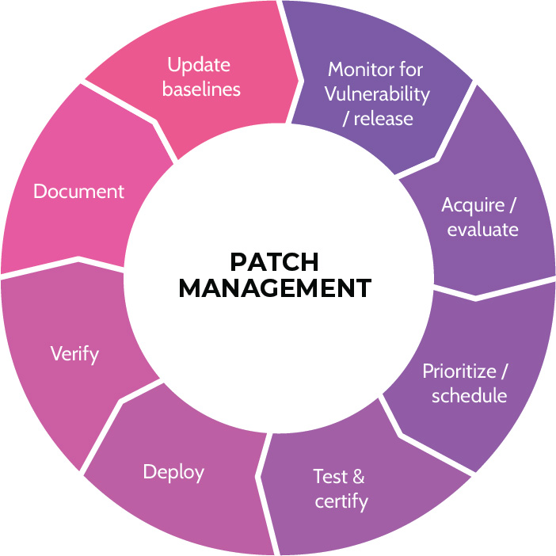
Figure 7-8: Patch Management Life Cycle
Determining Patch Levels
Understand the methods used to determine patch levels and ramifications/challenges of each method
As alluded to, it's important to be able to determine patch levels of systems, and several ways to do this exist. One way is agent-based. An agent is a small program installed on a host, and it monitors the host for patch needs. The agent knows what software/patches are installed on the host, and it routinely compares them to a master database to see if any needs exist. If patches are needed, the agent typically automatically initiates an update process.
Agentless, as the name implies, means no agent is installed on the host system. Rather, monitoring software or a patch scanning system will routinely connect to the host and check patch levels.
Finally, there's what's known as passive detection. With this approach, a look back at vulnerability analysis is required-specifically with how operating system and software versions are detected on a system. This is done through fingerprinting, where activity on a system-network packets particularly-can identify system and software versions. Based upon this approach and data gathered, it can be possible to determine the patch level of systems and then respond accordingly.
Three methods for determining patch levels are summarized in Table 7-8.
|
Agent |
Agentless |
Passive |
|
Update software (agent) installed on devices |
Remotely connect to each device |
Monitor traffic to infer patch levels |
Table 7-8: Patch Levels of Systems
Deploying Patches
Understand patch deployment methods and why it might make sense to use a manual method
Once the need is identified, patches can be deployed via manual or automated means. With a manual approach, somebody actually logs into the target system and installs the software. With an automated approach, software is used to roll out the patches. A good example of the latter is Microsoft's Windows Server Update Services (WSUS), which helps maintain and update patches on Windows computers. With regards to high-value, high-priority production systems, automated patching shouldn't be used because patching sometimes breaks things. So, manual patching of these types of systems is often the best approach, as it allows for much better control and response if an issue arises. For rank-and-file systems, automated patching is the best approach and can help an organization maintain a consistently configured environment that was mentioned earlier.
Manual versus automated patching are summarized in Table 7-9.
|
Manual |
Automated |
|
Somebody logs into the system and installs the software |
Patching software automatically rolls out the software updates |
Table 7-9: Patch Deployment Methods
7.9 Understand and participate in change management processes
7.9.1 Change Management
CORE CONCEPTS |
|
|
Change management is important in the context of security operations. In essence, change management ensures that costs and benefits of changes are analyzed and changes are made in a controlled manner to reduce risks. The actual change management process is described below.
Change Management Process
Understand the change management process and what happens at each step
The first step is known as a change request. A change request can come from any part of an organization and pertain to just about any topic. A business owner might want new functionality. Someone in IT identified a misconfiguration that requires a change. A threat management application identified that a system is vulnerable and needs to be patched. Changes can come from everywhere. When a change request is made, the impact of the change must be assessed. How big of a deal is this change?
If a vulnerable system requires a patch, should the change management process take the typical amount of time?
No, this is when emergency change management can be utilized. Related to the severity of the proposed change, the size of the change must be considered. If the change is minor and relates to a low-value system of secondary importance, how many levels of review and approval should be involved?
Common sense would dictate not many levels, but if this is a multimillion-dollar change that's going to affect multiple stakeholders and customers, how many levels of review and approval should now be involved? Probably quite a few.
After a change request has been assessed, approval should follow. Approval can take place at multiple stages, but if a significant and potentially costly change is being considered, it should definitely be approved first, Approval also takes place in the context of starting and designing a change as well as prior to implementation. Who approves change can vary significantly, but the owner of the system and potentially other relevant stakeholders should definitely be part of the approval process. This fact explains why Change Advisory Boards (CAB) are often utilized as part of the change management process, because they include key stakeholders from throughout an organization.
Once approved, the change should be built and tested, and key people should be notified before implementing the change. Testing might include things like regression testing, where changes can be tested to ensure that everything still works, including the new functionality. Other types of validation testing can also be conducted. Once a change has been built and tested, stakeholders notified, and the change implemented, management and other relevant parties should once again be notified to validate the change.
Finally, and perhaps most important, it's critical to update documentation and versions and baselines. In fact, documentation should take place throughout the process. The discipline and rigor that a company places upon change management is directly proportional to how well a company operates. In other words, if a company has terrible or nonexistent change management, their environment is most likely a mess, pointing toward disaster. It's undoubtedly reactive, and employees are probably constantly fighting fires. Without enough or proper change management, the environment is likely chaos. Contrarily, with too much change management, every change often requires too much time and too many layers of approval. In this context, people avoid and go around the process, which can lead to chaos as well. Proper change management strikes a balance between too much and too little oversight. All required change management steps have been depicted in Figure 7-9 and described in Table 7-10.
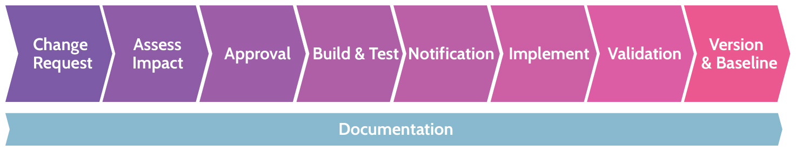
Figure 7-9: Change Management Steps
|
Change request |
A change request can come from any part of an organization and pertain to almost any topic. Organizations typically use some type of change management software that includes a request portal, among other tools that help manage and track the overall process. |
|
Assess Impact |
After a change request is made, however small the request might be, the impact of the potential change must be assessed. Additionally, the size of the change should be included in this assessment. |
|
Approval |
Based upon the requested change and related impact assessment, common sense plays a big part in the approval process. If the requested change relates to a critical need, perhaps emergency change management protocols can be utilized. If the requested change relates to noncritical, lower-value items, the levels of review and approval should probably be minimal. However, if the change is significantly costly and going to impact multiple stakeholders, the levels of review and approval should likely be high. |
|
Build and Test |
After approval, any change should be developed and tested, ideally in a test environment. Testing should be thorough and include all steps necessary to ensure proper functionality of the change as well as viability of existing functionality. |
|
Notification |
Prior to implementing any change, key stakeholders should be notified. |
|
Implement |
After testing and notification of stakeholders, the change should be implemented. |
|
Validation |
Once implemented, senior management and stakeholders should again be notified to validate the change. |
|
Version and Baseline |
Documentation should take place at each of the steps noted, but at this point, it's critical to make sure all documentation is complete and to identify the version and baseline related to a given change. This last step is especially helpful, as maintaining discipline in this area can help an organization operate most effectively and efficiently in a proactive manner. |
Table 7-10: Detailed Description of Change Management Steps
7.10 Implement recovery strategies
7.10.1 Failure Modes
CORE CONCEPTS |
|
|
|
Understand the three types of failure modes and what each one prioritizes
Within any environment, consideration must be given to when things fail. Failure refers to components within a system, for example, disk drives or power supplies, as well as entire systems, like a firewall, or facilities, like an office or warehouse. Several failure modes exist, and they are explained in Table 7-11.
|
Fail-soft |
Fail into a state of less security, for example, a firewall allowing all traffic through if it fails. This could cause significant security problems. |
|
Fail-secure |
Fail into a state of the same or greater security, for example, a firewall blocking all traffic if it fails. Though this might block legitimate users, it would also maintain security by blocking all attackers. |
|
Fail-safe |
Fail into a state that prioritizes the safety of people, for example, the doors to a secure facility unlock automatically in the event of a fire alarm going off. |
Table 7-11: Failure Modes
7.10.2 Backup Storage Strategies
CORE CONCEPTS |
|
|
|
|
|
|
|
|
|
|
Understand different backup strategies and how a backup strategy fits into an overall recovery strategy
Recovery strategies focus on several key things, including bringing systems back online quickly, minimizing data loss, and architecting systems in a manner that precludes system downtime if a system failure occurs.
An important component of recovery strategies is backup strategies, which focus on backing up data in such a manner that if the primary data store is lost, corrupted, stolen, or otherwise compromised, the data can be recovered and restored. Before diving in a bit deeper on this topic, it's important to understand a technical detail known as an archive bit. Within virtually every operating and associated file system, each file will have an associated bit. The bit is simply metadata, which is data about data.
Archive Bit
An archive bit, as depicted in Figure 7-10, can be set to zero (0) or one (1), and the setting indicates if the file needs to be backed up or not. If the archive bit is set to 0, the file does not need to be backed up; if the archive bit is set to 1, the file needs to be backed up. When a backup is performed, the archive bit is usually set to 0. After the backup, if any of those files are modified or if new files are created, the archive bit is set to 1, indicating that the file needs to be backed up.
Figure 7-10: Archive Bit
This is important to understand because different backup strategies deal with the archive bit differently. Incremental and differential backup strategies do not treat the archive bit in the same manner.
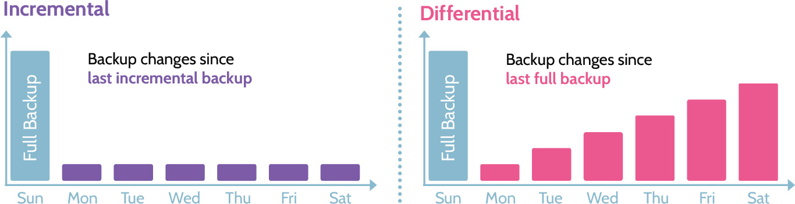
Figure 7-11: incremental vs. Differential
Figure 7-11, each diagram shows the days of the week on the horizontal line, because backup strategies are typically based on a seven-day calendar week. The varying height bars above each day represent the amount of data being backed up during each backup cycle.
Incremental Backup
An Incremental backup starts by performing a full backup, represented by the bar above Sunday. A full backup means that every file, regardless of the archive bit setting, is backed up, and the archive bit on each file is then set to 0. On Monday, the typical beginning of a work week, people show up and start creating or modifying files. The archive bit associated with every new or modified file is set to 1. On Monday evening, when the incremental backup is run, all of the files with an archive bit set to 1 are backed up, and the archive bit is reset to 0. On Tuesday, people once again come to work and create or modify files, and all of the files that have been created or changed since Monday are backed up during Tuesday's incremental backup. As the diagram depicts, incremental backups typically lead to a small amount of data being backed up each time. Only the changes-new or modified files-since the last backup are backed up each evening.
Differential Backup
A differential starts the same way, by performing a full backup, and the archive bit on each file is set to 0. On Monday, as before, people show up to work and create or modify files, and the archive bit on each new or modified file is set to 1. Here's where the difference exists: On Monday evening, when the differential backup is performed, the archive bit of backed up files is not reset to 0. All of the files whose archive bit is set to 1 are backed up, and the archive bit on each file remains set at 1. On Tuesday, people again create and modify files, and the archive bit on those files is set 1. Now, during Tuesday's differential backup, all of the new and changed files from Monday and Tuesday are backed up, and again, the archive bit on every backed up file stays set to 1. On Wednesday, Thursday, Friday, and Saturday, the same thing happens. As the graph depicts, differential backups result in more and more files being backed up each evening. In other words, all of the changes since the last full backup (on Sunday) are backed up each evening.
As one might imagine, each backup strategy comes with pros and cons.
One advantage of incremental backups is they're typically very fast, especially toward the end of the week when much less data is being backed up. However, a big disadvantage of incremental backups relates to recovery. Imagine a system has failed on a Saturday night, and we need to restore all of the data. First, Sunday's full backup would need to be restored, and then each incremental backup prior to Saturday (or including Saturday, if Saturday's backup took place prior to the failure) would need to be restored. This obviously represents quite a few backup tapes as well as time to recover.
Contrary to a longer recovery time with incremental backups, recovery with differential is much quicker. At most, only two backup tapes would ever need to be restored-the full backup and the most recent differential. This is a significant advantage relative to incremental backup. However, differential backup takes more time to perform, especially at the end of the week, and much more data storage is used.
Which strategy should be utilized? As with many decisions, the goals and objectives of the organization should drive this decision. What's the business trying to achieve? What are they willing to pay for? Similar questions will ultimately help drive the response to this question.
Mirror Backup
Another type of backup is known as a mirror backup, where an exact copy of a data set is created, and no compression is used. Mirror backups can often be created and restored quickly, but at the cost of significant amounts of data storage. Of the three types of backups mentioned, mirror is the fastest to backup and restore, but it requires a tremendous amount of data storage; incremental backups require the least amount of data storage. Table 7-12 contains a comparison of the prementioned back strategies.
|
Type |
Data Backed Up |
Backup Time |
Restore Time |
Storage |
|
Mirror |
Exact copy with no compression |
Fastest |
Fastest |
High |
|
Full |
ALL data |
Slowest |
Fast |
High |
|
Differential |
Full and then changes since last full backup |
Moderate |
Moderate |
Moderate |
|
Incremental |
Full and then changes since last backup |
Fast |
Slow |
Lowest |
Table 7-12: Summary of Backup Strategies
Backup Storage Strategies (e.g., cloud storage, onsite, offsite)
Understand backup storage strategies, including reasons for tape rotation
Questions are often raised about which locations are optimal for backup storage. Onsite backups involve storing backup data in the same place as the original data. They are local backups. Offsite backups involve storing the data in a separate location from the original data. A good choice would be to store the backup media at a geographically remote location. Geographically remote means the backup location is far enough away from the primary location so a natural disaster, political uprising, or other significant event at the primary location won't impact the backup location. Cloud backups involve storing data in the cloud. Not only is cloud storage in a separate location, but it provides high availability, often at a relatively low cost. Other storage strategies are outlined below:
Electronic vaulting: This term usually implies some type of automated tape management system, like a tape jukebox. These systems contain numerous backup tapes, which are managed automatically by a robotic arm and backup scheduling software.
Tape rotation: This refers to different types of tape backup strategies. Each strategy dictates when a tape is used for backup, how long a tape is retained, and restoration requirements.
Cyclic Redundancy Check (CRC)
Understand the purpose behind the use of checksums/CRC
In the context of backups and moving data around a network, a term known as cyclic redundancy check, or CRC, is often used. A CRC is a bit of math that is used to ensure the integrity of data, and CRC can be used anywhere data resides-hard drive, when moving data across a network, and even in RAM. Among other uses, a CRC can be used to validate backups in order to ensure the integrity of the backed up data. A CRC is a method of detecting accidental changes to data at rest or in motion.
7.10.3 Spare Parts
CORE CONCEPTS |
|
|
|
Oftentimes people take for granted that systems in a data center "just work" all the time. But what happens when those systems stop working due to a part failing? Business stops. So, with any critical systems, it's important to have spares of critical components for those systems on hand. Critical components include things like power supplies, cooling fans, hard drives, and so on. Then, if the primary part in a system fails, a spare part can be installed and up and running very quickly. Three types of spare parts exist, and the name points to the location. Table 7-13 contains a summary of all spare types.
|
Cold Spare |
Warm Spare |
Hot Spare |
|
|
|
|
Table 7-13: Spare Types
7.10.4 Redundant Array of Independent Disks (RAID)
CORE CONCEPTS |
|
|
|
|
|
Understand the primary types of RAID and pros and cons of each
Redundant array of independent discs, better known as RAID, is the concept that instead of one hard drive being utilized in a system, multiple drives are used in unison to achieve greater speed or availability. In this context, hard drives can be grouped in a number of different ways-called RAID levels-to achieve these goals. Three of the best-known RAID levels are RAID 0, RAID 1, and RAID 5. RAID 0 is also known as striping, RAID 1 as mirroring, and RAID 5 as parity protection. We are going to focus on the most well-known RAID levels.
RAID 0-Striping
RAID 0 (shown in Figure 7-12), also known as striping, works as follows. Imagine a file is sent to the RAID controller on a system. The RAID controller is simply a piece of hardware (sometimes it's software) that manages the storage of data on connected hard drives. Depending upon the type of RAID configured, the controller will make the appropriate decision about how to best store the file. With RAID 0, the file is split into two pieces, and one piece is saved on one hard drive and the other on the other hard drive. RAID 0-striping-is all about speed of writing and reading data, because of the power of the RAID controller. If the file is split and written to two drives at the same time, write speed is effectively doubled. Similarly, when reading the file back from two drives at the same time, read speed is also doubled. RAID 0 is all about speed.
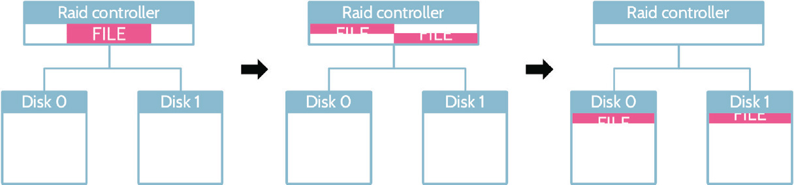
Figure 7-12: RAID 0
RAID 1-Mirroring
RAID 1 (shown in Figure 7-13), also known as mirroring, is set up exactly the same way as RAID 0. However, in this case, instead of splitting a file and putting a portion of each on separate drives, the file is written to each drive. In other words, the same file now resides on two different drives; thus the term mirroring. If one drive fails, the file can easily be recovered because it was written to two locations. RAID 1 is all about availability through redundancy.
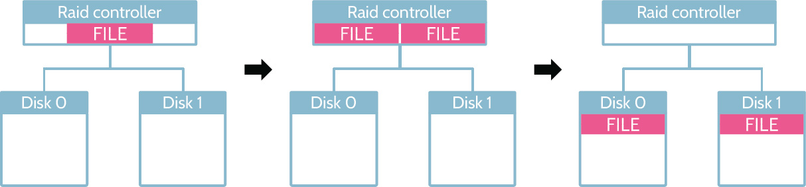
Figure 7-13: RAID 1
RAID 10-Mirroring and Striping
RAID 10 or RAID 1+0 or 0+1 (shown in Figure 7-14) is, in a sense, the best of both RAID 0 and RAID 1. With each of the latter approaches, a minimum of two hard drives is required. With RAID 10, a minimum of four drives is required, because you're treating data the way it is treated using RAID 0 and RAID 1. When a file is sent to the RAID controller, two copies are made, and then each copy is split, resulting in four chunks of data. RAID 10 offers the advantage of significant speed and redundancy, but these advantages come with the associated need for and cost of more hard drives.
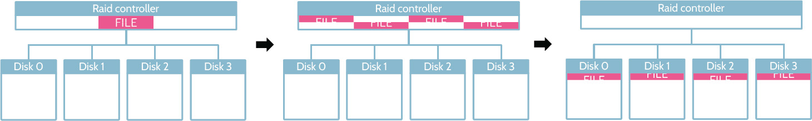
Figure 7-14: RAID 10
RAID 5-Parity Protection
RAID 5 (shown in Figure 7-15) attempts to strike a balance between RAID 0 and RAID 1 and provide availability in an efficient and cost-effective manner. Unlike RAID 0 and 1, where a minimum of two hard drives is required to work, RAID 5 requires a minimum of three hard drives. As before, a file is sent to the RAID controller, and the file is split into two parts, and one more piece of data-the parity data-is computed, using a binary mathematics operation known as XOR, or exclusive or. With the parity data in place, if either part of the file was lost, it could be reconstructed using the remaining part and the data contained in the parity data. So three pieces of data exist-the two file chunks and the parity data-and each is written to a separate hard drive. Additionally, to further provide protection against loss, the parity data is typically not written to only one drive. A round robin methodology is employed that varies the location of file chunks and parity data. RAID 5 offers very quick read/write speeds as well as redundancy.
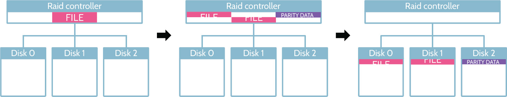
Figure 7-15: RAID 5
A comparison between the different RAID types is provided in Table 7-14.
|
RAID |
Data Redundancy |
Read/Write Performance |
Min. # of Drives |
|
|
0 |
|
Highest |
2 |
|
|
1 |
|
Moderate |
2 |
|
|
1+0 |
|
Highest |
4 |
|
|
5 |
|
High |
3 |
|


Table 7-14: RAID Type Comparison
7.10.5 Clustering and Redundancy
CORE CONCEPTS |
|
|
|
Understand the difference between clustering and redundancy and a primary by-product of each approach
Clustering and redundancy are two other important terms pertaining to recovery and protection of systems and data. Both concepts point to high availability (HA) of systems.
Clustering refers to a group of systems working together to handle a load. This is often seen in the context of web servers that support a website. Typically, incoming traffic will be managed by a load balancer that distributes requests to multiple web servers, the cluster. With clustering, if one system goes down, the amount of overall performance for the cluster drops by an equivalent amount.
Redundancy also involves a group of systems, but unlike a cluster, where all the members work together, redundancy typically involves a primary system and a secondary system. The primary system does all the work, while the secondary system is in standby mode. If the primary system fails, activity can fail over to the secondary. One or more secondary systems can exist, but there is always only one primary. With redundancy, if the primary system goes down, there is no loss in performance, because the secondary system takes over, and typically any secondary system will be configured exactly the same as the primary system.
Clustering and redundancy both include high availability (HA) as a by-product, which can help ensure ongoing operations in the face of planned/unplanned system outages, failure of components, or other disruptions to operations. Clustering is about systems working together, and redundancy is about one primary and one or more secondary systems.
Clustering and redundancy are summarized in Table 7-15.
|
Clustering |
Redundancy |
|
A cluster of multiple systems work together to support a workload |
A single primary system supporting the entire workload and one or more and secondary systems that will take over if the primary one fails |
Table 7-15: Clustering and Redundancy
7.10.6 Recovery Site Strategies
CORE CONCEPTS |
|
|
|
|
|
Recovery to this point has been more focused on systems or components of systems. Recovery of sites is equally important. For example, what happens if an entire data center goes down?
Understand the time required to bring each type of recovery site online
Different recovery strategies exist, and elements like time to recover and money are important components of each. Something called a cold site is relatively inexpensive, but it takes a relatively long time to bring online. A mirrored or redundant site, on the other hand, can be brought online very quickly, but this type of site is also extremely expensive. Figure 7-16 illustrates this fact, and each type of strategy will be discussed in a bit more detail below.
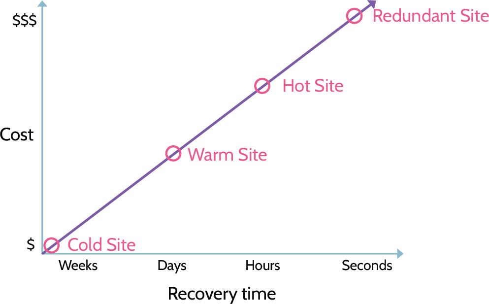
Figure 7-16: Recovery Site Types
Before looking more closely at different types of recovery sites, however, it's important to examine components related to each strategy.
Infrastructure and HVAC refer to the shell of a building and the heating, ventilation, and cooling equipment-pretty much the basic items that make up any building. It may also include equipment racks and basic cabling, but no computers or networking hardware. Racks and basic cabling are cheap; computer and networking hardware can be very expensive, potentially costing millions of dollars. Of course, data is the component that runs on the systems, and people are the component that run and manage the data center on a daily basis. As can be seen, a bare shell is much less expensive than a site that contains everything to run an organization. Recovery time, as noted above, can vary and is essentially the length of time to get back up and running.
The cheapest recovery option-cold site-is the least expensive for a reason. With this strategy, you essentially get a shell of a building that needs to be populated with equipment, data, and people. It usually takes weeks to bring a cold site online. The biggest advantage of a cold site is cost-it's cheap.
A warm site is better than a cold site, because in addition to the shell of a building, basic equipment is installed-racks are in place, cables are run, and so on. Servers, network, and other equipment as well as data and people are the missing components. Unlike a cold site, a warm site can be brought online in a matter of days.
Hot sites, compared to cold and warm sites, are significantly more expensive, because everything is ready to go except for the data and people. Servers, networking equipment, and so on are all in place, only waiting for data to be restored and people to operate the site. Hot sites can usually be brought online in a matter of hours.
A form of hot site is known as a mobile site. A mobile site is a hot site on wheels, and many companies use them in anticipation of emergency or severe business disruption. Essentially, a mini data center is built inside something like a shipping container, and then if something happens, the shipping container can be loaded onto a truck and moved where needed. The federal government uses these when hurricanes or other natural disasters strike. Similar to a stationary hot site, a mobile site can also be brought online quickly-in days, or even hours-with the time to move to location often being the biggest determining factor.
Finally, a redundant site is extremely expensive, because the basic infrastructure and equipment, expensive equipment, data, and people are in place and ready to go. A redundant site can be architected in such a manner that the primary site can automatically fail over to the redundant site if required. Thus, a redundant site can be online and running instantaneously or in a matter of seconds. Of course, this benefit comes at very high cost, and it is usually as much as the cost of the primary site.
The recovery sites are summarized in Table 7-16.
|
Cold |
Warm |
Hot |
Mobile |
Redundant |
|
People |
|
|
|
|
|
|
Data |
|
|
|
|
|
|
Computer Hardware |
|
|
|
|
|
|
Basic Equipment |
|
|
|
|
|
|
Infrastructure/HVAC |
|
|
|
|
|
|
Cost |
$ |
$$ |
$$$ |
$$$ |
$$$ |
|
Recovery |
Weeks |
Days |
Hours |
Days/Hours |
Instant/Seconds |
Table 7-16: Recovery Site Type Comparison
Understand the importance of geographic disparity to recovery site strategies
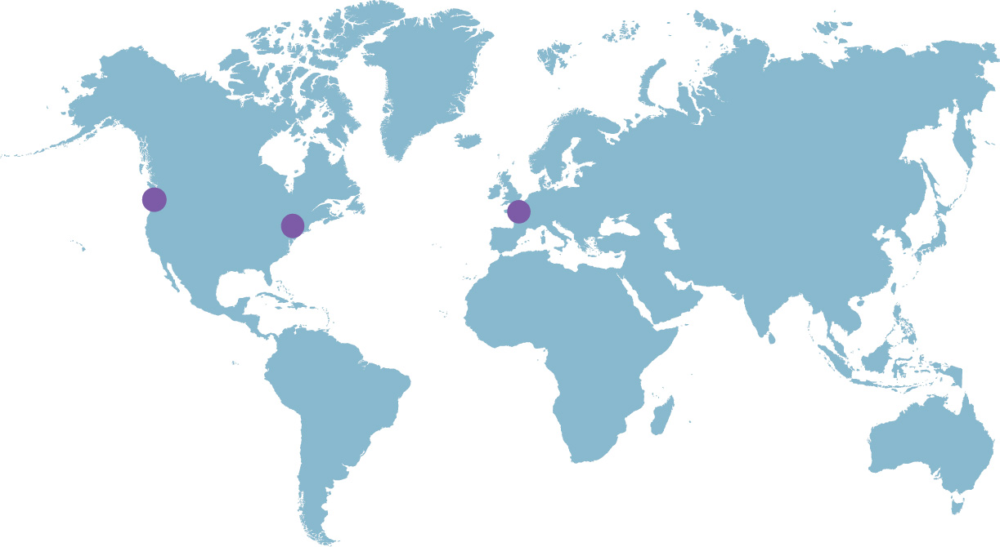
Geographically Remote/Geographic Disparity
Another topic of relevance is the notion of a recovery site being geographically remote. In other words, if an organization's primary site is on the East Coast of North America, perhaps the recovery site should be somewhere in the Midwest or West Coast of North America. The idea is that you don't want whatever may have brought a primary site down to also impact the recovery site.
Internal versus External Recovery Sites
The words internal and external refer to who owns the recovery site. Internal sites are owned by the organization; external sites are owned by a third party. A good example of an external site provider is Sungard. Companies like Sungard offer organizations a wide portfolio of colocation, data, and recovery centers around the globe. However, as the use of cloud services has continued to expand, many organizations use it as a significant part of their backup and recovery strategy.
Internal versus external recovery sites are summarized in Table 7-17.
|
Internal Recovery Site |
External Recovery Site |
|
Owned and operated by the organization |
Provided by a service provider |
Table 7-17: Internal vs. External Recovery Sites
Reciprocal Agreements
Another important concept is known as a reciprocal agreement, where two companies agree to support each other if either company suffers an outage. Each company essentially says to the other, "If you experience downtime, you can recover your key systems in our data center." In reality, reciprocal agreements are quite rare, especially in the context of private enterprise.
Resource Capacity Agreements
Resource capacity agreements are agreements that organizations make with vendors to ensure that they can secure the resources they need during a disaster. These are critical for business continuity.
Multiple Processing Sites
Multiple, or multiprocessing, sites are more than one site where key business functionality is performed. A great example of where this is employed is in the credit card processing industry, where transactions are processed simultaneously at multiple sites located in different parts of the country. A primary record of the transaction is maintained, and the secondary records are there in case something happens at that site where the primary record is located. The premise of multiprocessing sites is geographically dispersed redundant processing, and this functionality is architected from the beginning, which makes it quite expensive but also very effective and reliable.
Disaster Recovery Solutions Summary
With the recovery site landscape described above, how does an organization decide which type makes the most sense? When considering this question, every organization should consider a couple of variables to help determine the answer. The two variables-RPO and RTO (shown in Figure 7-17)-point to data and time as relates to recovering from a disaster.
RPO stands for recovery point objective, and it refers to how much data an organization could afford to lose. The answer to this question specifically drives data backup and recovery strategies.
RTO stands for recovery time objective, and it refers to how long it takes an organization to move from the time of disaster to the time of operating at a defined service level in a recovery environment. Defined service level does not mean back to business as usual but rather to some level of service that allows business to move forward.
The business impact analysis (BIA) is the process that helps an organization identify its most critical functions, services, assets, systems and processes, and RPO and RTO are subsequently determined to understand how much data and how quickly these systems and processes need to be recovered.
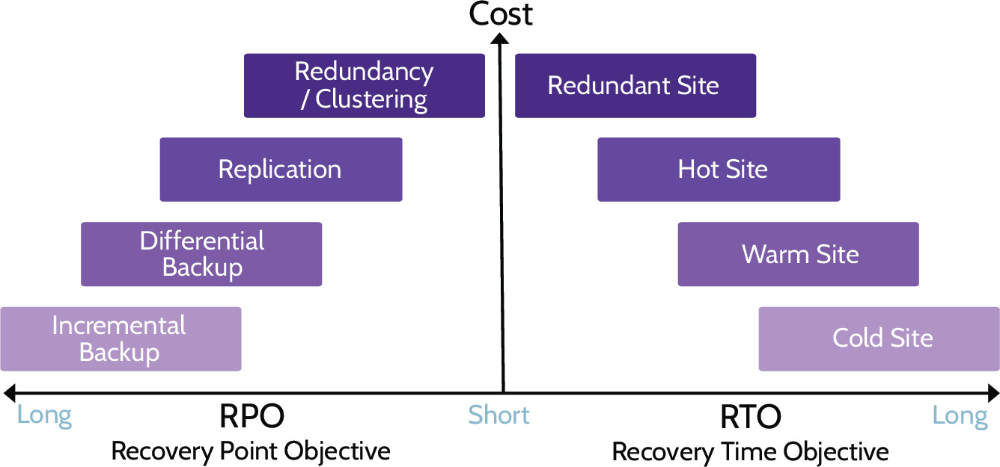
Figure 7-17: RPO and RTO
System Resilience, High Availability, Quality of Service (QoS), and Fault Tolerance
In addition to utilizing recovery site strategies, as noted above, system resilience, high availability, quality of service (QOS), and fault tolerance are achieved through the other means noted throughout this section:
Clustering
Redundancy
Replication
Spare parts
RAID
As with most security- and cost-related considerations within an organization, goals and objectives ultimately drive decisions, including those related to utilization of one, a combination of, or all of the strategies and solutions noted here.
7.11 Implement disaster recovery (DR) processes
7.11.1 BCM, BCP, and DRP
CORE CONCEPTS |
|
|
|
|
 BCP vs. DRP
BCP vs. DRP
Understanding MTD, RTO, RPO, WRT
The processes described in this topic all help mitigate the effects of a disaster, preserving as much value as possible. Business Continuity Management (BCM), Business Continuity Planning (BCP), and Disaster Recovery Planning (DRP) are ultimately used to achieve the same goal-continuity of the business and its critical and essential functions, processes, services, and so on.
A disaster is defined as a sudden, unplanned event that brings about great damage or loss. In a business environment, it is any event that creates an inability on an organization's part to support critical business functions for some predetermined period of time.
Simply put, a disaster is something that interrupts critical and essential business processes. Related terms, like BCM, BCP and DRP, are all listed in Table 7-18.
BCM creates the structure necessary for BCP and DRP. Where BCP is primarily concerned with the components of the business that are truly critical and essential, DRP is primarily concerned with the technological components that support critical and essential business functions. BCP focuses on the processes; DRP focuses on the systems. One important thing to note is that not all business functions are critical or essential, and this should become very clear during the BCP process. Also, even when experiencing a disaster, an organization must still adhere to laws, regulations, privacy requirements, and so on.
|
Business Continuity Management (BCM) |
|
|
The business function and processes that provide the structure, policies, procedures, and systems to enable the creation and maintenance of BCP and DRP plans. |
|
|
Business Continuity Planning (BCP) |
Disaster Recovery Planning (DRP) |
|
Focuses on survival of the business and the capability for an effective response; strategic |
Focuses on the recovery of vital technology infrastructure and systems; tactical |
Table 7-18: BCM, BCP, and DRP
Steps in the BCP/DRP process
BCP is all about being able to continue performing work and delivering services at an acceptable level (often tied in with specific SLAs) after an impacting incident takes place at an organization. DRP aims at documenting a specific set of activities that will need to take place so an organization is able to recover from an incident and resume normal operations. It ultimately aims at allowing the organization to return to what is known as a Business As Usual (BAU) state of operation. The key BCP/DRP steps are included in Table 7-19.
|
1. Develop Contingency Planning Policy |
This is a formal policy that provides the authority and guidance necessary to develop an effective contingency plan. |
|
2. Conduct BIA |
Conduct the business impact analysis, which helps identify and prioritize information systems and components critical to supporting the organization's mission/business processes. |
|
3. Identify controls |
Measures taken to reduce the effects of system disruptions can increase system availability and reduce contingency life cycle costs. |
|
4. Create contingency strategies |
Thorough recovery strategies ensure that the system may be recovered quickly and effectively following a disruption. |
|
5. Develop contingency plan |
Develop an information system contingency plan. |
|
6. Ensure testing, training, and exercises |
Thoroughly plan testing, training, and exercises. Testing validates recovery capabilities, whereas training prepares recovery personnel for plan activation, and exercising the plan identifies gaps. |
|
7. Maintenance |
Ensure plan maintenance takes place. The plan should be a living document that is updated regularly to remain current with system enhancements and organizational changes. |
Table 7-19: BCP/DRP Steps
In addition to internal processes, assets, functions and systems, serious consideration must be given to external dependencies and how they could be impacted during a disaster. As an example, let's say we run a data center and our goal is to maintain one week of uptime, even if the power goes down. In order to accomplish this goal, we would need sufficient generator capacity and fuel. However, fuel can be costly to store, so we decide to only store enough fuel for 48 hours of generator operation. We could schedule fuel deliveries to bring in gas to cover the rest of the week. In this example, the fuel delivery company would be an external dependency. We would need to consider strategies to ensure that we can rely on this company when a disaster strikes. If there is a powerful hurricane or other disaster, will the company still be able to make its deliveries? Or should we consider backup options, like organizing an out-of-state supplier? External dependencies can go far beyond just fuel suppliers. Any external organization, individual, or service can be an external dependency, and organizations need to consider these as part of their BCP.
7.11.2 RPO, RTO, WRT, and MTD
CORE CONCEPTS |
|
|
|
|
|
When dealing with BCP and DRP procedures, there are four key measurements of time to be aware of. Those are:
Maximum Tolerable Downtime (MTD)/Maximum Allowable Downtime (MAD)
Refers to the maximum amount of time that an organization's critical process or processes can be impacted. MTD is sometimes referred to as maximum allowable downtime (MAD) or acceptable interruption window (AIW). If the MTD is reached or exceeded, the ongoing viability of the organization can be called into question, and in fact, the organization may have reached its end and will cease to operate. MTD is often considered relative to the recovery time objective (RTO). As a golden rule, the RTO should never exceed the MTD. In other words, MTD > RTO, or RTO < MTD should always be true.
Using a bank as an example, MTD measures how long their systems can be down before they're no longer in business. If the core banking systems go down and no one can access their money for any significant amount of time, the bank is likely to lose the trust of their clientele and go out of business. A bank's MTD is likely a matter of minutes.
Recovery Time Objective (RTO)
Refers to the amount of time expected to restore services or operations to a defined service level in a recovery environment. For example, if a defined and reasonable service level during a period of disruption is 75 percent and it takes four hours to reach that percentage, the RTO is four hours. RTO is a component of MTD.
In the previously mentioned example, if the bank had a backup data center in a different city, the RTO might be a measure of how long it would take to get that backup data center up and running.
Definitions of RPO, RTO, WRT, and MTD
Cost implications of RPO and RTO
MTD = RTO + WRT
Recovery Point Objective (RPO)
Refers to the maximum amount of data that can be lost in terms of time. In other words, how much data is the organization willing to lose as a measurement of time: ten seconds worth of data, ten minutes, fifteen hours, two days, etc. The less data the organization is willing to lose, the more expensive the backup solution will need to be. If the organization is willing to lose up to twenty-four hours' worth of data, then a nightly backup is probably sufficient, but if the organization is only willing to lose a few seconds worth of data, then much more complicated and expensive solutions, like stream backups and/or replication, will be required.
For example, in the event of a massive earthquake, a bank would lose all of the information that wasn't backed up at the time of the disaster. If their maximum tolerable data loss was twenty-four hours, then a significant number of financial transactions would disappear, and the disaster would severely impact their reputation as well. As a result, banks usually have a much shorter RPO.
Work Recovery Time (WRT)
This is the time needed to verify the integrity of systems and data as they're being brought back online. Just bringing systems back online is not enough to ensure the viability and continuity of operations in an organization. There needs to be assurance that the systems are functioning properly. The WRT represents the time needed to perform this step, and it is also a component of MTD.
In order to get back to business as usual (BAU), the bank would need the information from that data center transferred to the original location. WRT would be the measure of how long it takes to ensure that the bank can return to conducting their day-to-day operations.
Figure 7-18 helps visualize how these measurements of time all fit together, while Table 7-20 provides their definitions. The horizontal axis is time, starting with business as usual, and then kaboom! Some sort of disaster occurs. The first measurement of time we can now look at is RPO, the maximum amount of data loss as a measurement of time. After the disaster has occurred, the next measurement of time is the RTO, the maximum amount of time to restore processes/systems to a defined service level. WRT is then the time required to validate systems as they are fully brought back online and return to business as usual. Finally, the MTD is the maximum amount of time processes/systems can be down before the business ceases to be a business. MTD is the most important measurement of time to consider when making the decision to declare a disaster.
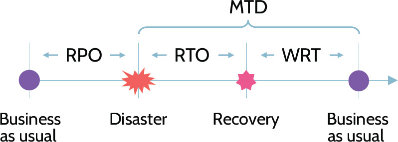
Figure 7-18: MTD, RPO, RTO, and WRT Relationships
|
RPO |
Recovery Point Objective: Maximum tolerable data loss |
|
RTO |
Recovery Time Objective: Recovery time to defined service level |
|
WRT |
Work Recovery Time: Maximum time to verify integrity of systems and data |
|
MTD |
Maximum Tolerable Downtime: Maximum total time that a process can be disrupted |
Table 7-20: RPO, RTO, WRT, and MTD Definitions
How to reduce the cost of BCP and DRP plans
When considering the cost related to implementing BCP and DRP plans, the more quickly a given process/function/system needs to be recovered, the more expensive the solution. In other words, the shorter the RPO and RTO requirements, the more significant the cost becomes. To extrapolate further, in order for an organization to make its BCP/DRP plan as cost efficient as possible, one of the goals should be to increase the RPO (more data can afford to be lost) and RTO (the time to recover can take longer) as much as it can tolerate within the acceptable bounds.
Lower RPO/RTO = more expensive
Higher RPO/RTO = less expensive
7.11.3 Business Impact Analysis (BIA)
CORE CONCEPTS |
|
|
|
|
Purpose of the BIA process
Steps in the BIA process
The Business Impact Assessment (BIA) is the most important step in Business Continuity Planning. Its purpose is to predict the consequences of a disaster or a disruption to business processes and functions and then identify them as time parameters for the whole purpose of gathering information to develop recovery strategies for each critical and essential function and process. The output of a BIA are key measurements of time: RPO, RTO, WRT, and MTD.
The purpose of the BIA is to identify and prioritize system components by correlating them to the mission/business processes the system supports and then to use this information to characterize the impact on the processes if the system was unavailable. In the event of a disaster, having conducted a BIA ensures that security will make the right decisions about what assets to focus on and will choose the right resources for prioritization of their recovery efforts.
The BIA Process
Since many of the key systems in an organization are interdependent, creating the BIA is not a simple and quick process, and in some organizations it can take months to complete. Each critical business process and system will have its own RPO, RTO, WRT, and MTD measurements.
Identifying and assigning values to an organization's most critical and essential functions and assets is the first step in determining what processes to prioritize in an organization's recovery efforts. Financial records, workshops, questionnaires, interviews, and observation are typically used to determine and assign values, using quantitative and qualitative methods. A crucial part in this process is involving staff from the various company functions so input can be provided about critical systems and services to allow reaching the right decisions. Making these determinations is an iterative and team-oriented effort.
Once asset values are determined, priorities can be set, and processes to protect the most important assets can be identified. Table 7-21 denotes the steps included in the BIA process.
|
1. Determine mission/business processes and recovery criticality |
Business processes are identified, and the impact of disruption is determined, along with outage impacts and estimated downtime. The downtime should reflect the maximum that an organization can tolerate while still able to achieve the corporate mission. This downtime is reflected in the time-centric metrics discussed earlier: RPO, RTO, WRT, and MTD. |
|
2. Identify resource requirements |
Realistic recovery efforts require a thorough evaluation of the resources required to resume critical business processes and related interdependencies. Examples of critical resources may include business processes, facilities, personnel, equipment, software, data, and systems. |
|
3. Identify recovery priorities for system resources |
Based upon the results from the previous activities, system resources can be linked to critical business processes. Priority levels can be established for sequencing recovery activities and resources, typically by creating dependency. |
Table 7-21: BIA Steps
7.11.4 Disaster Response Process
CORE CONCEPTS |
|
|
|
|
Understand the role maximum tolerable downtime (MTD) plays in the declaration of a disaster
As discussed, a disaster is something that interrupts normal business operations. Prior to a disaster being declared however, the incident response process should be followed. As review, the incident response process focuses on ongoing monitoring of events and determining which events are in fact incidents. Once an incident is identified, an assessment of its severity must be made. Is the data center in flames, or did a hard drive in one of the servers fail? During the assessment of an incident, one specific variable should be carefully considered-MTD, also known as Maximum Tolerable Downtime. MTD is the maximum amount of time that a business can sustain a loss of key functionality and remain viable. So, as part of the incident impact assessment, if it's clear that the MTD will be exceeded, a disaster should be declared and the disaster recovery plan immediately initiated. If the data center is burning and the MTD is four hours, will incident response activities have everything back to normal in less than four hours? No, so the DRP should be activated, which will enable the business to remain viable by bringing a hot, mobile, or redundant site online.
Declaring a Disaster
Understand what constitutes a disaster
In the same vein used to discern an incident from an event, determining what is a disaster relative to an incident requires an understanding of what assets might be involved, how operations and processes might be impacted, and other factors that ultimately point to the risk to value and ongoing viability of an organization. The declaration of a disaster and therefore the activation of a business continuity plan needs to be done by an authoritative entity such as the CEO or a Business Continuity Board or Committee.
Assessment
As noted above, prior to a disaster being declared, the incident response process should be followed. Once an incident is identified, an assessment of its severity must be made. During the assessment of an incident, one specific variable should be carefully considered-MTD, also known as maximum tolerable downtime. If the MTD is going to be exceeded, a disaster should be declared, and the response process and response team should be activated. At this point, the response team will help manage an organization through the disaster until it is resolved. Through DR tests held as part of building a DRP, the response team should be able to quickly respond to the situation at hand and take all necessary steps to restore business operations to normal.
Personnel
The trained team-the emergency response team-should consist of stakeholders from throughout the organization. Examples might include personnel representing the following functional areas:
Executive/senior management
Legal
HR
IT
PR
Security
Training and Awareness
Success in any endeavor typically involves significant preparation and training, and this is certainly true where the disaster recovery process is concerned. As will be discussed in more detail later in this section, disaster recovery plans should be tested often-at least annually-to best familiarize staff members and members of the emergency response team with the proper steps to follow in the event of a disaster.
Lessons Learned
After a disaster has been handled and operations restored to normal, a review of everything that took place should be conducted. This "lessons learned" exercise should focus on every facet of a BCM and especially on the DRP to determine what worked well, what needs to be improved, and what needs to be added or eliminated from the plan. As planning goes, including a "lessons learned" element could prove to be invaluable for the sake of an organization's long-term success and viability.
Communications
As noted among the specific response components, when a disaster is occurring, communication is of critical importance and should include all relevant stakeholders, which can be a very large group of people.
Relevant stakeholders include people internal to the organization as well as people external to the organization.
Internal: In the event of a disaster, internal communications are critical. Internal stakeholders could include senior management, Board members, business owners, legal, HR, and media and communications team members, among others.
External: Equally critical in the event of a disaster is external communications. External stakeholders could include regulators, law enforcement, customers, the media, and others.
7.11.5 Restoration Order
CORE CONCEPTS |
|
|
|
|
How is the order determined for restoring systems?
Understand how a dependency chart informs restoration order of systems/applications
With multiple systems and accompanying DR plans that make up the overall plan, how is the order of system recovery determined? Which systems are brought back first? Knowing that recovery resources are limited, the BIA helps determine which systems receive priority. The most critical systems, based upon the goals and objectives of the organization, should always be recovered first.
Dependency Charts
Another way to determine system/application restoration order is using dependency charts. For example, let's imagine we want to bring the primary website back online. Is this as simple as turning on the web server and then the site is up? No, because the web server might be part of a more complex architecture that includes a load balancer, a database server, and a cluster of web servers. So, to bring the website back up, each underlying component would first need to be online and available. Dependency charts, like the one shown in Figure 7-19, can map out exactly what components are required and even their initiation order.
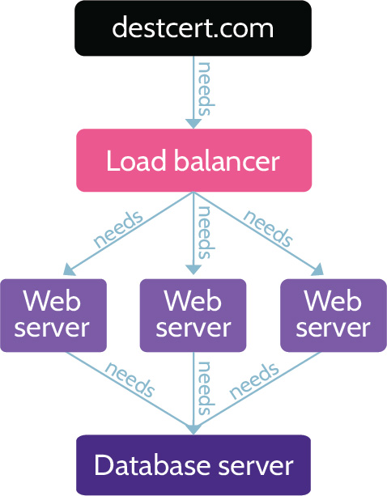
Figure 7-19: Restoration Order Determination
Understand the order when moving systems/operations to/from a DR site
What systems/operations should be moved first to the DR site?
After declaring a disaster, the first order of business should always be to get the most critical processes and elements of the business up and running at the recovery site.
Once the primary site is fixed, what systems/operations should be moved back first?
As time progresses, and the primary site is rebuilt and ready to once again host business operations, the processes and systems that should be restored first are the least critical. Why is this the case?
In essence, because the primary site is essentially new, it makes more sense to restore less critical processes and systems first to make sure the new site is working as expected. Once any kinks or issues are resolved, then the most critical processes and systems can be restored.
7.12 Test disaster recovery plans (DRP)
7.12.1 BCP and DRP Testing
CORE CONCEPTS |
|
|
|
Know the order of DRP testing and which test is least/most impactful
After recovery plans have been created, it's imperative to test them. Tests can range from simple to complex, and each type is valuable.
The first type of test is the easiest and is known as a read-through test. This test simply ensures that the major components of the DRP are included, including first steps, accurate contact lists, and so on. Are all of the major pieces of information included in the plan?
The next test is what's known as a walkthrough test. The thinking behind a walkthrough is that all of the key stakeholders convene in a conference room and walk through the plan. Key stakeholders could include business owners, IT staff, senior management, legal, and so on. Each person receives a copy of the plan, and everybody walks through it together, thereby allowing problems and holes to be identified, so improvements can be made. The entire exercise is paper-based, but the outcome often proves very valuable.
A simulation test follows, and it too is paper-based. Key stakeholders are once again brought together, but this time a facilitator is also included for purposes of moderating a scenario that requires the stakeholders to respond according to what's happening. For example, the facilitator might present a scenario that includes a major fire at a production facility or a dangerous virus outbreak. Once the scenario is presented, the stakeholders must use the DRP to help guide their response. At the same time, the facilitator can continue to throw curveballs at the situation, which requires the stakeholders to think quickly and respond accordingly.
It's important to reiterate at this point that these tests are not an "IT-only business." Whether reviewing BCPs or DRPs, all relevant stakeholders should be at the table and part of the process.
Up to this point, all of the tests have been paper-based exercises. The following section describes tests that include working with systems.
The first is known as a parallel test. It's very similar to a simulation test, but in this case the scenario is responded to with people located where they'd be if it was an actual situation. People would touch systems, but only backup systems, not anything in production. This is why it's known as a parallel test-people are only working with systems parallel to production systems.
The last test is what's known as a full-interruption or full-scale test. With this test, backup and production, or primary, systems are used to respond to the scenario. That is a very important point-with a full-scale test, production systems will be impacted.
Based upon the descriptions above, it's clear that the riskiest type of test-full-scale-is also the best type of test for confirming whether a DRP is going to work. Otherwise, there's really no way to know for sure how the plan, including the response of personnel, is going to function. As risky as they can be, full-scale interruption tests will often reveal the tiniest of holes in a plan and therefore are extremely valuable.
When should a full-scale, full-interruption test be conducted? Only after every other test has been successfully conducted and with management's approval should a full-interruption test be conducted. Because a full-interruption test can potentially take production systems down, it's important that senior management be aware of and approve the possibility of this happening. Table 7-22 contains a summary of all prementioned DRP test types.
|
Type |
Description |
Affects backup / parallel systems |
Affects production systems |
|
Read-through/Checklist |
Author reviews DR plan against standard checklist for missing components/completeness |
|
|
|
Walkthrough |
Relevant stakeholders walk through the plan and provide their input based on their expertise |
|
|
|
Simulation |
Follow a plan based on a simulated disaster scenario. Stop short of affecting systems or data. |
|
|
|
Parallel |
Test DR plan at recovery site/on parallel systems |
|
|
|
Full-interruption/Full-scale |
Cause an actual disaster and follow DR plan to restore systems and data |
|
|
Table 7-22: DRP Test Types
7.13 Participate in business continuity (BC) planning and exercises
7.13.1 Goals of Business Continuity Management (BCM)
CORE CONCEPTS |
|
|
|
Understand the three goals of business continuity management (BCM)
The goals of business continuity management (BCM), which is the overall BCP and DRP process, are simple, yet important. BCM includes three primary goals:
1. Safety of people
2. Minimization of damage
3. Survival of business
Understand the number one goal of BCM
The number one goal of any component of BCM is safety of people. Next, the second goal is minimizing damage to facilities and the business. Finally, the third goal is ensuring the survival of the business. Within all of these goals, BCM should focus on the most critical and essential functions of the business.
In addition to the material covered in this domain, the ISC2 Official Exam Outline lists:
7.14 Implement and manage physical security
Perimeter security controls
Internal security controls
All physical security concepts, including the specific bullet points noted above, have been covered in Domain 3.
7.15 Address personnel safety and security concerns
As already noted, safety of humans should be the paramount consideration within any organization's security plan. Security training and awareness programs, emergency response and management training, and physical security and access controls all help in this regard.
However, two additional subjects related to this topic also need to be touched upon:
Travel
Duress
Oftentimes employees must travel for work, and sometimes this may include visits to less safe or stable parts of the world. Even though an employee may not be physically present on a corporate campus, the organization is still responsible for ensuring the employee's safety, which might include providing additional medical coverage, travel and health insurance, and an action plan in the event of an emergency. In fact, due to the continued rise in global travel and associated security-related complexities, many organizations-especially large multinational corporations-outsource the travel logistics to companies like International SOS. International SOS acts as a single point of contact and helps design and implement integrated health and security policies and procedures that give access to 24/7 global health, security, travel, and emergency assistance to corporate subscribers.
Along with an understanding of travel-related considerations, security professionals should have a basic understanding of how to handle situations that involve employees under duress. Duress is defined as "threats, violence, constraints, or other action brought to bear on someone to do something against their will or better judgment." An example of duress is being held at gunpoint and forced to withdraw money from an ATM, or being threatened with violence unless some type of illegal action is taken. Regardless of the cause of duress, employees should be trained in how to respond in a pressured situation. Depending upon the context, this training might involve the use of code words to alert coworkers of a need for assistance, or perhaps it could involve pressing a silent alarm button that alerts security and other personnel. Most importantly, employees should be trained to respond with reason and to not react to the situation at hand.
 MINDMAP REVIEW VIDEOS
MINDMAP REVIEW VIDEOS
 CISSP PRACTICE QUESTION APP
CISSP PRACTICE QUESTION APP

Download the Destination CISSP Practice Question app for Domain 7 practice questions